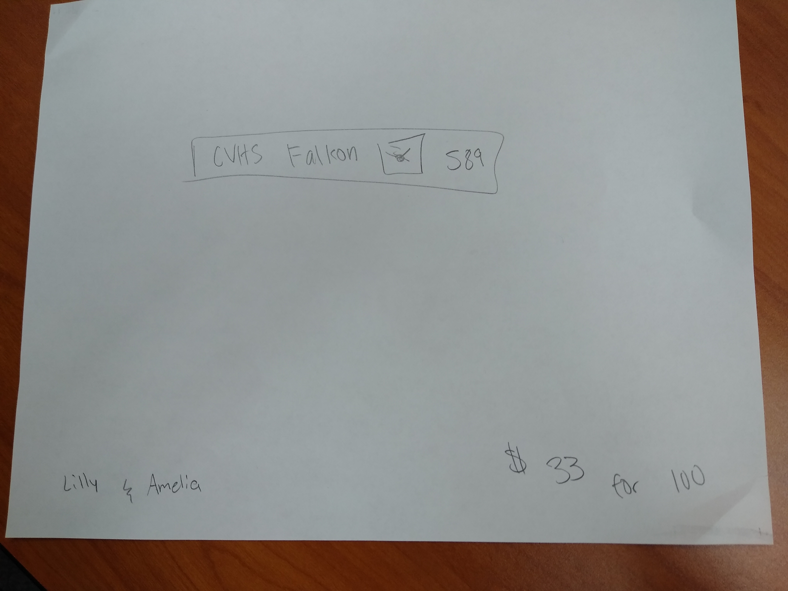
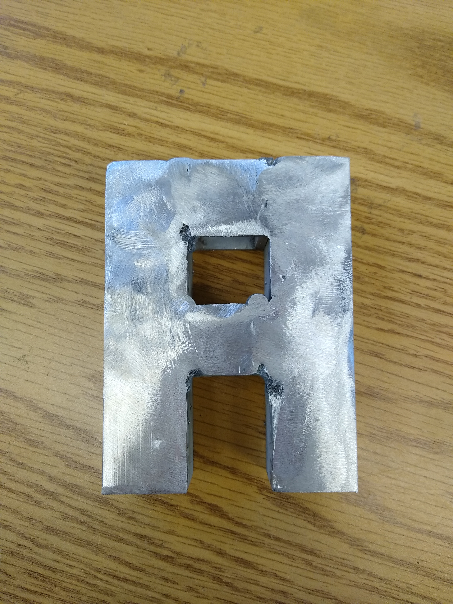

8/26/21: This week in class we started learning about the different robot games. We started with first robotics and ended with the JPL inventions challange. We designed differnt types of robots to comply with the different robot games. Over all I had fun this week.
9/9/21: This week was very fun. We learned about M-E and did fun activities alongside with it. On wednesday we did the wednesday challenge, which consisted of designing and building a rubber band boat. My boat went the farest distence, but had no rubber band to power it. I just blew on it. Overall this week was fun.
9/28/21: For my machine, I started of by drawing the design out on paper. Then after that I went onto tinkercad and cadded up the design. I made sure to do all the necsesary steps in order to get a good finished project. After that we started gathering up materials, and when we had all of our materials I started to construct my design. Eventually after a lot of boxes I finsihed building it. For our Thursday challanges we had to measure out wood to be exact. I used a method which included measuring at multiple points to get the best cut. When done with that, we went downstairs and used the table saw to cut the wood. Overally this was all very fun.
For this project we had to come up with and build a Rube Goldberg Contraction. We had to design and build it with simple supplies and it was for our mechanical engineering week. After drawing the concept we had to CAD it up on tinkercad, a free browser based cadding website, and get the dementions excatly how we wanted them. When we were done with that we built our contraptions.

10/20/21: This week and last week we learned about electrical engineering. We started of with a basic cercuit with an LED, a resistor, and a power source. Then we worked it up by adding multiple LEDs and resistors. Eventually we have buttons, LEDS, resistors, an ardino, and wires connecting to ground. We leaned how to wire everything correctly and how to connect all the pins on the arduino and the corresponding pin holes on the bread board. We also leaned how to make LEDS blink in a random order and how to turn them on and off using the arduino cooding locaion. I had very much fun learning how to code the blinking LEDS. Overally I had a lot of fun this week. Including when I blew up an LED and started a small fire :)).
10/27/21: This week we leant more about electrical engineering. We added to our bread boards. We added relays, an arduino and I hooked them both us to a little lego car. I also had fun and drove my car down the hallway a little bit connected to my laptop. We wired in some more LEDS and we also leant how to connect up the wire to the relay.
11/5/21: This week in class we leaned more about electrical engineering. We leaned how to use a soldering iron and how to make a circuit. We laened hwo to properly solder three wires, and LED, and a button. We started off my just soldering two wires together, then we got together the supplie that we needed and we started soldering the circuit. I had a red LED, black button, and red wires. Overall this week was really fun, because I love soldering.

11/12/21: This week in class, we worked on our design project. We did more reasearch and we all came up with what we wanted to design and build. My project is that I am going to be desgining a robotic arm that can be used on a mars rover. It will have multiple different grabing tools and it will have a motion sort of thing that will make it move in an easier way and help it move more like a human hand. This week we also did two different Wednesday Challanges. For the first one we had to decide if we wanted to write out if we wanted to writ the numbers 1 to 1,000,000 or take a normal year long math class. At first I chose the 1,000,000 but near the end, I decided to go with the math class because it would actually take a much shorter amount of time to do then the writing the numbers. The second one that we did was that we had to make a bridge of post-it notes. We had to make the longest bridge possible, without using any other materials to help us. I chose to go from a table to another table, and i won that challenge by briding the furthest.
11/19/21: This week in class, we started working on our spaghetti bridge final. The requirements for theis project were to use civil engineering to come up with a stable design that would help hold up a bucket of water the best. The restraints that we had were to only use 20 pieces of spaghetti, and the bridge has to be 2 feet long in length. We also have to come up with a CAD of our spaghetti bridge project. So far our design consists of a lot of little pieces of spaghetti broken up into small sections and glued together in a specific patern to gain the most stabillity. We are going to use lots of little pieces to make a stable structure for the bridge, if we have enough spaghetti sticks. At the beginning of the week we also worked a little more on our design projects. I finished with the about it section and am almost done with the reasearch part of the project proposal. I still need to come up with a list of parts that I need, the desgin constraints and the biography about myself. The people that I am working with on the spaghetti bridge project are Wesli and Colin.
12/10/21: This week in class we continued to work on our spaghetti bridge. We tested out the last prototype of our orginal desgn, and it worked! We did add some changes to the original design, which included making the whole width shorter and making the gap inbetween each section much smaller than it already was. On wednesday we went down to Dr. Neat's classroom and listened to a presentaion from a sofrtware engineer. It was engaging and fun to listen to. Then on the other two dasy of the week we built more bridge prototypes. This time we built our final design.

1/14/22: Over the past weeks before winter break started, we tested our spaghetti bridges. We tested the 3 bridges that we made and 1 out of the 3 bridges actually was able to hold more than a solo cup full of water. The bridge that we made in a bout 30 seconds on, actually happened to be the one that won the overall challange. The original bridge that we made was one of the worst bridges because it barely held half a cup of water.
When we got back to school, we started working on the new robotics challange. We made CADs and I came up with an idea to have a conveyer belt type machine that uses a fly wheel, cannon that shoots the ball into the hoop. My desgin will take the ball thought the body of the robot and then use wheels, as a fly system type thing and then shoot it out though a barrel.
Yesterday we did a Thursday challage, which consisted of one rubber band with string attatched to it. We also had two popsical sticks with paper clips round them. I was working with Wesli on this challange.
1/21/22: This week we mainly just worked on our design projects. On Thursday we did do a Thursday challange though. We had to come up with an idea about an ideal product that we could give out to teams during the Robotics Tornaments. I worked with Lilly and we came up with the idea to give out rubber bracelets that had CVHS Falkons 589, along with a picture of the CV logo with a falkon on it. The bracelet was blue. For my design project, I am going to be atempting to build and come up with a design that will help scientists on Mars with collecting, storing, and drilling samples.

1/28/22: This week we mainly just worked on our design projects. We worked on them on Monday, Tuesday, Wednesday, and I will work on it today after i'm done writing this. So far my project is coming along nicely. I have the basis of my project CADed up, and now need to make a base for the arm and the components of the arm. On Thursday we did a Thursday challange. This week the challange was to pass plastic tubes to each other sitting in a circle or standing. The first round was sitting on the ground, the second round was standing up, the third round was standing on one leg, and the forth and last round was facing the other way around. The way that we completed these challanges was that we all made sure to throw the tubes high into the air and that we all made sure to catch them. The first two levels for the challange were pretty easy once we got the hang of it, but the final two took a little more time to master. We did eventually get the last stage on the last chance we had to get it. Overall this week was pretty fun and I had lots of fun working on my design project and working on the Thursday challange.
2/4/22: This week we started working on bioengineering. We learned what it was and what it is manily used for in day to day life. We also learned about prosthetics on different animals like humans and other animals. I desgined a prosthetic back leg for a frog to use if its leg had to be removed, or was removed in some other way. It had ball motors that would be used as the joints, and would spring up and down with a rubber flipper type thing.
Something else that we did this week was our Thursday challange. For this weeks Thursday challange, we had to come up with a problem in the school and find and design a solution to this problem. The problem that my group came up with, was that the lunch lines were to long and it was an insufficent way of serving lunch to the students of cv. Our solution was to come up with a solution that consisted of using a theme park ride, type design with the snake design and having only one entrance and only one exit. There would be a special one way door thing at the exit/entrance to the lunch line. Another solution that we came up with was lunch boxes, like the things that they have at amazon. They would store the lunch inside them and then when the student comes to swipe their card, then the doors open and the food is there for them. Overall this week, I had fun learning about bioengineering and doing the Thursday Challange.
We also learned about the "Trolley Problem". This is a series of events that consists of a ran-away train, yourself and a lever, a group of 5 people on a track, and a singluar person on another bit a track. You have the option to save either the 5 or the 1 person.
2/11/22: This week was pretty fun. On Monday, Tuesday, and Wednesday we just worked more on our design projects. I started making a list of supplies that I might need and tarted figuring out what materials each of the different components of my design will be. Most of the design will be 3D printed (I think), and the other components will be either metal or wood depending on which piece i'm doing. On Thursday we did something different. We went down to the shop and we did some welding. It was a little scary at first, but after I actually did it, it was really fun and enjoyable. It was cool how the masks would filter out the light from the welding gun. It sorta went dark when the welding gun started up and then returned to a medium greening color when it was over. Overall oit was a very fun experience and I liked welding. I would definentally try it again it ever the oppertunity presesnted its-self. As usual on a Friday, we updated our websites. Overall this week was fun. I had a good time with all the things we did this week.
2/23/22: Overall, this week was pretty fun. I learned new things and I got to experience some new equipment. I did more weldding and am slowly becoming better at it. I also learned how to use a grinder to ground down the metal to make a cleaner finish and a more nicer looking finished project. All we did this week was weld our letters, and learn how to grind them. Overall I had a lot of fun this week. 